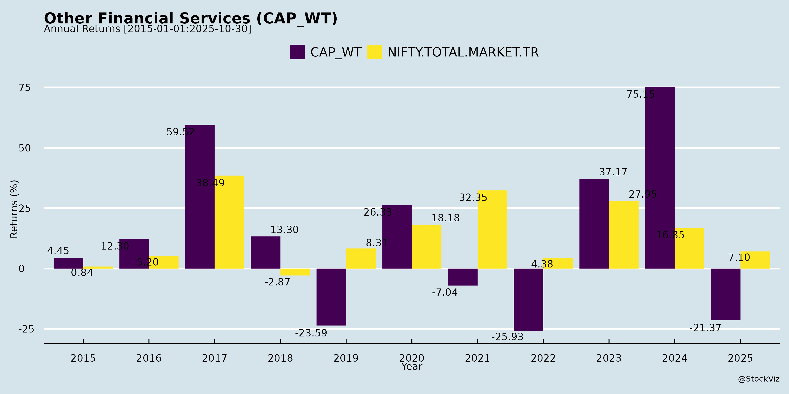
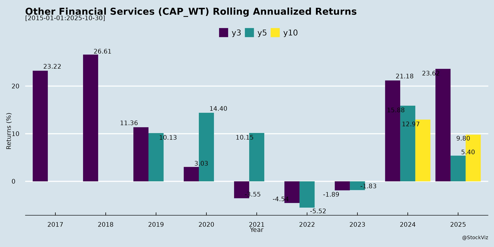

asof: 2025-11-29
Analysis of Indian Other Financial Services Sector
Using the provided Crisil Analyst Call transcript (May 2025) as the primary input—representing key players in ratings, analytics, benchmarking, and risk solutions—and the minor Wealth First intimation (indicating ongoing investor engagement), here’s a structured analysis for the Indian Other Financial Services sector (encompassing credit ratings, market intelligence, analytics, portfolio management, and related services). Crisil’s insights reflect sector dynamics, given its leadership and S&P Global affiliation.
Headwinds
Tailwinds
Growth Prospects
| Segment | CY2024 Growth | Q1 FY25 Growth |
|---|---|---|
| Ratings Services (incl. GAC) | Strong (domestic bonds + surveillance) | +32.5% YoY |
| RAS (Intelligence + Greenwich + Integral IQ) | Marginal decline | +2% YoY |
Key Risks
Summary: The sector shows resilience (domestic tailwinds > headwinds), with ratings/analytics driving near-term growth amid global caution. Prospects hinge on rate cuts, capex revival, and GenAI adoption, but geopolitics pose the biggest overhang. Crisil’s Q1 FY25 outperformance (+10% revenue) signals potential upside if uncertainties ease; monitor annual trends over quarters for true momentum. Wealth First’s meeting indicates sustained investor interest.
asof: 2025-12-02
Analysis of Indian Other Financial Services Sector
The provided documents cover Q1 FY25 (e.g., Crisil), Q3 FY25 (e.g., Investment Trust, Maha Rashtra), and FY25 annual results/clarifications from firms in ratings (Crisil), securities/broking/advisory (Prime Securities, Investment Trust), NBFCs/investment trusts (Maha Rashtra, NDL Ventures), and others (Delphi, GACM). This represents a diverse sub-sector including ratings, broking, advisory, asset management, and legacy NBFCs. Overall, the sector shows resilient core operations amid market volatility, but faces legacy/regulatory drags. Below is a structured analysis:
Tailwinds (Positive Factors)
Headwinds (Challenges)
Growth Prospects
Key Risks
| Risk Category | Details | Impacted Firms | Mitigation |
|---|---|---|---|
| Regulatory/Compliance | RBI cancellations, pending schemes, deposit liabilities (₹3K Cr+), interest non-provision. | Maha Rashtra, Investment Trust | Court deposits (₹1,397L), but escalates costs. |
| Audit & Provisioning | Qualified opinions; overstated profits (e.g., Maha Rashtra ₹322L cumulative). | Maha Rashtra | Prudence in tax/DTA recognition. |
| Market/Cyclical | Volatility in broking/trading; high valuations delaying deals. | Prime, Investment Trust | Diversified segments (advisory stable). |
| Associate/Subs Dependency | Losses from associates (₹3.3K Cr in Maha); unreviewed subs. | Maha Rashtra, Investment Trust | Equity method accounting; monitoring. |
| Liquidity/Legacy | Unencashed cheques (₹237L), lapsed deals. | Maha Rashtra | Year-wise reconciliations. |
| Operational | Single-segment reliance (NDL Ventures: minimal ops). | NDL, Delphi, GACM | Clarifications on filings; low revenue base. |
Summary
The Indian Other Financial Services sector exhibits strong tailwinds from ratings/advisory growth (Crisil/Prime leading with 10-47% revenue/PAT jumps) and diversification into wealth/fintech, positioning for 15%+ CAGR amid capital market expansion. However, headwinds like market fatigue and legacy NBFC issues (Maha Rashtra’s qualifications/deposits) cap momentum. Growth prospects are bright for analytics/broking (9M outperformance), but key risks center on regulations (pending approvals, RBI curbs) and provisions (interest/deposits), potentially eroding 10-20% profits in stressed firms. Investors should favor diversified players like Crisil/Prime; monitor legacy-exposed names. Sector PE likely 20-25x on FY26 earnings recovery.
asof: 2025-12-03
Summary Analysis: Indian Other Financial Services Sector
Using the provided disclosures (Regulation 30 announcements from companies like Crisil, Centrum Capital, Wealth First Portfolio Managers, Prime Securities, The Investment Trust of India (ITI), Delphi World Money, NDL Ventures, Reliable Data Services, and GACM Technologies), this analysis focuses on the Other Financial Services sector (encompassing NBFCs, investment trusts, portfolio managers, securities firms, broking/advisory, and niche players like forex/remittance and AIF setups). These filings highlight corporate actions, financials, expansions, and challenges as of mid-to-late 2025. The sector shows resilience amid diversification but faces regulatory, legal, and governance headwinds.
Tailwinds (Positive Drivers)
Headwinds (Challenges)
Growth Prospects
Key Risks
| Risk Category | Description | Severity (High/Med/Low) | Examples from Filings |
|---|---|---|---|
| Regulatory/Legal | Litigation (Delphi suits on jurisdiction/rights), pending approvals (ITI demerger, AIF registrations), SEBI scrutiny on ESOPs/postal ballots. | High | Delphi’s unauthorized comms & court transfers; ITI scheme pending NCLT. |
| Governance | Auditor churn, data misuse (Delphi investor lists hacked/shared). | High | Reliable resignation; NDL re-appointment post-tenure. |
| Financial/Operational | Rising costs (ITI finance costs +18% YoY), negative cash flows, segment losses (asset mgmt). | Medium | ITI’s ₹31L Cr working capital drag; OCPS redemptions. |
| Market/External | Volatility in broking/advisory (ITI Q2 dip), rumor amplification via social media. | Medium | Centrum e-voting fixes; market-dependent revenues (ITI broking 44%). |
| Execution | Rights issue delays (GACM record date revision), subsidiary integrations. | Low | Wealth First smooth listing; Prime AIF timeline (6 months). |
Overall Outlook: Moderately positive with growth prospects outweighing headwinds (sector poised for 15-20% expansion via fintech/AIFs), but key risks center on governance/legal frictions. Investors should monitor Q3FY26 results, litigation outcomes (e.g., Delphi), and regulatory nods (ITI demerger). Recommended: Focus on diversified players like ITI/Crisil for stability; avoid high-litigation names like Delphi short-term.
Data sourced solely from filings; no external assumptions. Financials in ₹ Lakhs unless stated.
asof: 2025-11-29
Summary Analysis: Indian Other Financial Services Sector
(Based on Crisil Limited’s Q3FY25 Analyst Presentation and Wealth First Portfolio Managers’ Q2&H1FY26 Investor Presentation. This sector encompasses ratings, analytics, wealth/portfolio management, and advisory services, reflecting broader trends in financial analytics, credit intermediation, and asset management.)
Headwinds (Challenges Pressuring Performance)
Tailwinds (Supportive Factors)
Growth Prospects (High Potential, 15-20%+ CAGR Medium-Term)
| Key Metric | Crisil (9MFY25) | Wealth First (H1FY26) | Sector Projection |
|---|---|---|---|
| Revenue Growth | +9.4% | +13.3% (core) | 15-20% CAGR |
| AUM/AUA Growth | N/A | +5% (₹12.6Tn) | 18% CAGR (WM) |
| PAT Growth | +13% (PBT) | -7.4% (temp dip) | 15%+ medium-term |
Key Risks
Overall Outlook: Positive with Resilience. Tailwinds from financialization and strategic expansions outweigh headwinds, positioning the sector for 15-20% growth. Short-term volatility manageable via fee-based models; long-term prospects strong amid India’s wealth boom (top 1-3% households hold 70-80% financial assets). Monitor equity markets and regulatory timelines.
asof: 2025-12-03
Summary Analysis: Indian Other Financial Services Sector (Based on Provided Filings)
The provided documents cover regulatory disclosures, financial results (Q2/H1 FY26), AGMs, postal ballots, and corporate actions from companies like Crisil, Centrum Capital, Wealth First Portfolio Managers, Prime Securities, The Investment Trust of India (ITI), Delphi World Money, NDL Ventures, Reliable Data Services, Maha Rashtra Apex Corporation, and GACM Technologies. These firms operate in NBFCs, portfolio management, broking, wealth advisory, and fintech spaces. Overall, the sector shows resilience with profit growth amid expansion, but faces expense pressures and regulatory hurdles. Key metrics: Revenue up ~20-100% YoY in most (e.g., Wealth First +38%, GACM +110%), profits strong (e.g., Wealth First PAT ₹25cr H1), supported by capital raises and strategic moves.
Tailwinds (Positive Drivers)
Headwinds (Challenges)
Growth Prospects
Key Risks
Overall: Sector buoyed by capital markets upcycle and inorganic bets, but cost discipline key. Growth tilted positive (NBFC pivot), monitor Q3 for merger progress/expenses. Positive sentiment from approvals/dividends.
asof: 2025-12-03
Summary Analysis: Indian Other Financial Services Sector
Using the provided documents (Crisil Q3FY26 results, Prime Securities FY25 results, and Delphi World Money clarification), the analysis focuses on key players in ratings/analytics (Crisil), securities/wealth advisory (Prime), and forex/remittances/travel (Delphi). Overall, the sector shows resilience amid India’s steady GDP growth (6.5%) but faces global headwinds. Below is a structured summary:
Tailwinds (Positive Drivers)
Headwinds (Challenges)
Growth Prospects
Key Risks
Overall Outlook: Positive with Caution. Tailwinds from India’s growth and firm-specific momentum outweigh headwinds, but global risks and isolated legal noise warrant monitoring. Sector EPS/dividends remain attractive; focus on Q4FY26 for credit revival cues. Investors should prioritize official disclosures.
Copyright © 2023 SAS Data Analytics Pvt. Ltd. All rights reserved.